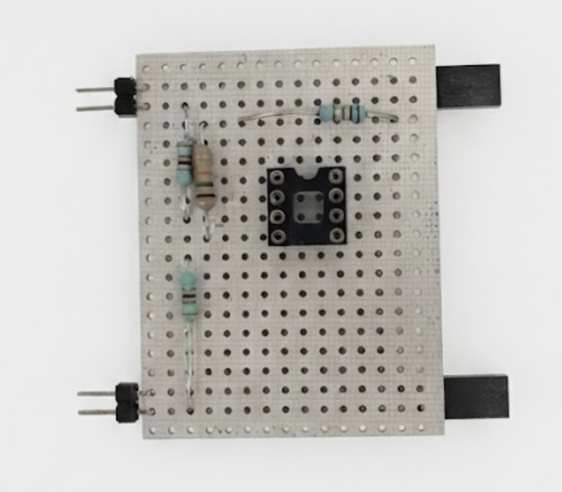
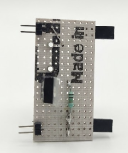
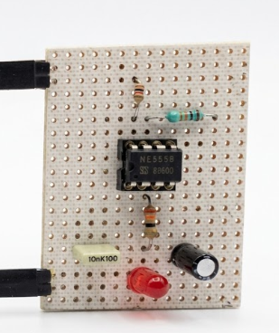
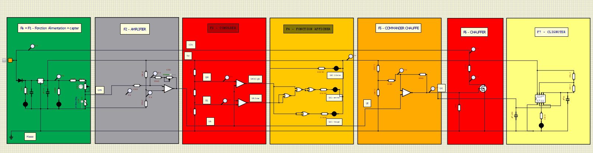

Régulateur de Température

Ce projet SAE consiste en la conception, la simulation et la réalisation d'un système complet de régulation de température. L'objectif est de maintenir une température de consigne en pilotant une résistance chauffante, tout en affichant l'état du système (froid, ok, chaud) via des indicateurs lumineux.
Analyse Fonctionnelle
F0 : Fonction Alimentation
Entrée 12V DC convertie en deux rails de tension : 12V (puissance) et 5V (commande) via un régulateur TO-220. Protection par diode anti-retour et témoins LED (rouge/verte) limités à 5mA.
F1 : Capter la Température
Utilisation d'une thermistance CTN en pont diviseur de tension alimenté en 5V. La variation de résistance permet d'obtenir une tension image de la température (Um).
F2 : Amplifier
Amplification du signal Um via un AOP pour adapter la dynamique du capteur à la plage de traitement souhaitée, produisant le signal Ut.
F3 : Comparer
Comparaison de la température mesurée (Ut) avec les seuils de consigne via un AOP en comparateur. Génération des signaux logiques Uthigh et Utlow pour l'affichage.
F4 : Afficher
Logique combinatoire (Portes NOR) pilotant 3 LEDs : Bleue (trop froid), Verte (température OK), Rouge (trop chaud).
F5 & F6 : Commande & Chauffe
Commande tout-ou-rien (hystérésis) activant un transistor MOSFET. Ce dernier pilote la résistance de puissance (10Ω) alimentée en 12V pour chauffer le système.
F7 : Clignoter
Indication visuelle du fonctionnement de la chauffe via une LED clignotante. Utilisation d'un circuit NE555 en oscillateur astable configuré pour une fréquence de 2Hz et un rapport cyclique de 0.7.
Montage des Cartes
Après validation des simulations (SimulIDE), la réalisation matérielle a été effectuée sur plaque pastillée. L'implantation des composants (Régulateur TO-220, AOPs, NE555, MOSFET) a été optimisée pour réduire les longueurs de pistes, réalisées à l'étain.
F5 : Commande de la Chauffe
Implantation du comparateur MC33201 et de ses résistances associées (2x 3.3kΩ, 1x 15kΩ, 1x 68kΩ) pour gérer l'hystérésis et la commande stable du système.

F6 : Circuit de Puissance
Câblage du transistor de puissance MOSFET TO-220 : Gate pilotée par le signal Uchauffe (avec résistance de rappel 1MΩ à la masse), Source au GND, et Drain connecté à la résistance chauffante externe.

F7 : Oscillateur Astable
Montage du circuit NE555 avec les composants passifs calculés (Résistances et Condensateur) pour garantir la fréquence de clignotement de 2Hz et le rapport cyclique de 0.6.

Vérifications & Tests Unitaires
Chaque bloc fonctionnel a été testé individuellement avant l'assemblage final pour garantir la fiabilité du système.
- F0 : Alimentation Validation des rails 12V et 5V avec une alimentation de laboratoire limitée à 100mA. Vérification de l'allumage des LED témoins (Rouge/Verte) et mesure précise des tensions de sortie.
- F1 : Capteur Température Simulation de la CTN avec une boîte à décade. Réglage du potentiomètre pour obtenir Um = 2.5V à la température de consigne. Validation des seuils Um_low et Um_high.
- F2 : Amplification Vérification des alimentations de l'AOP (TL081) et de la référence 2.5V. Injection d'un signal triangulaire (1kHz) pour valider la caractéristique de transfert Ut = f(Um) à l'oscilloscope (mode XY).
- F3 : Comparaison Contrôle des seuils générés par le pont diviseur (3.3kΩ / 1.8kΩ / 3.3kΩ). Test des sorties logiques Uthigh/Utlow en appliquant des tensions Ut variables (1V, 2.5V, 4V).
- F4 : Affichage Validation de la logique combinatoire (Portes NOR). Test séquentiel : LED Bleue (Froid), LED Verte (OK), LED Rouge (Chaud) en fonction des états simulés.
- F5 : Commande Chauffe Vérification du comparateur à hystérésis (MC33201). Mesure des seuils de basculement réels (proches de 2.04V et 2.96V) via un signal triangulaire en entrée.
- F6 : Puissance Chauffe Test de commutation du MOSFET avec une charge fictive (LED), puis avec la résistance de puissance réelle (10Ω). Validation de la consommation de courant sous 12V.
- F7 : Oscillateur (Clignotement) Vérification du NE555 activé par le signal Uchauffe. Mesure à l'oscilloscope : fréquence confirmée à 2Hz et rapport cyclique de 0.7.

Schéma de simulation global validé sous SimulIDE